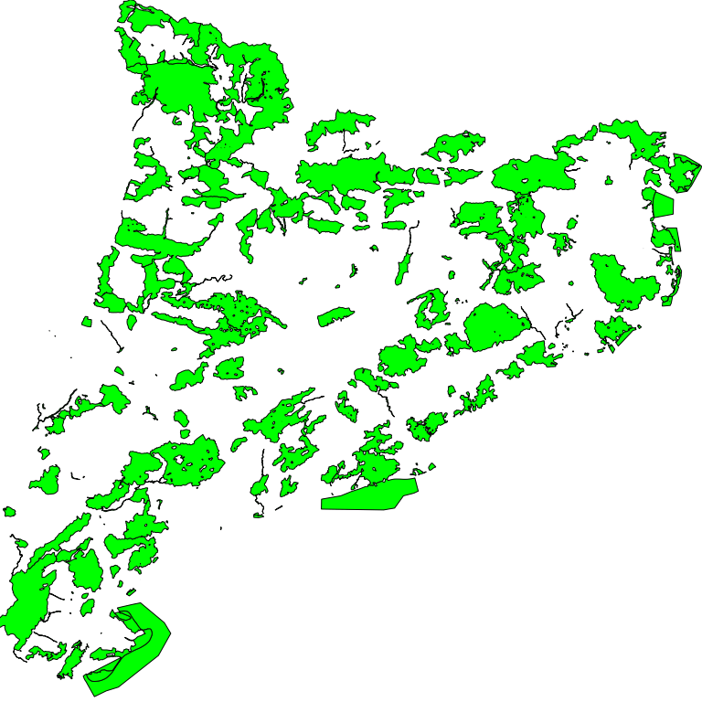

Note
| Fecha | Autores |
|---|---|
| 14 Febrero 2017 |
|
©2017 Wladimir Szczerban
Excepto donde quede reflejado de otra manera, la presente documentación se halla bajo licencia: Creative Commons (Creative Commons - Attribution - Share Alike: http://creativecommons.org/licenses/by-sa/3.0/deed.es)
Configuración de un archivo Mapfile (.map) para cargar una capa en formato ESRI shapefile (.shp).
Warning
Los todos los datos utilizados en este ejemplo son datos de ejemplo y no tienen ningún carácter oficial. Igualmente los datos pueden proceder de fuentes diferentes a las indicadas en la configuración del servicio y ser datos no reales.
Crear la carpeta del proyecto (mtig2017) donde crearemos y copiaremos todos los archivos. Es recomendable que la carpeta no esté en una ruta accesible desde Internet para evitar que los usuarios accedan directamente a nuestros datos.
Por ejemplo: crear la carpeta en C:\Users\XXXX\mtig2017
Crear el archivo pein.map dentro de la carpeta del proyecto. Abrir el archivo con un editor de texto (Notepad++, Atom, Sublime, etc).
Crear el objeto MAP.
# Inicio archivo MAP
MAP
#Nombre de la aplicación no debe contener espacios ni caracteres especiales
NAME plan_pein
#Estado
STATUS ON
#Extensión mapa [minx] [miny] [maxx] [maxy]
EXTENT 263747.60 4484436.53 527495.20 4748184.13
#Unidades del mapa
UNITS METERS
#Tamaño máximo de la imagen
MAXSIZE 4096
#Ruta de la cartografía
SHAPEPATH "datos"
#Color de fondo
IMAGECOLOR 255 255 255
#Formato de salida de la imagen
OUTPUTFORMAT
NAME "png8"
DRIVER AGG/PNG8
MIMETYPE "image/png"
IMAGEMODE RGBA
EXTENSION "png"
FORMATOPTION "QUANTIZE_FORCE=on"
FORMATOPTION "QUANTIZE_COLORS=256"
FORMATOPTION "GAMMA=0.75"
END
#Ruta librería proyecciones
CONFIG "PROJ_LIB" 'C:/ms4w/proj/nad/'
#Proyección por defecto del mapa
PROJECTION
"init=epsg:25831"
END
#Definición de las capacidades
WEB
IMAGEPATH "tmp/"
IMAGEURL "tmp/"
METADATA
OWS_TITLE "Aplicación OGC"
OWS_ABSTRACT "Ejemplo de interoperabilidad utilizando Minnesota MapServer"
OWS_ENABLE_REQUEST "*"
OWS_ONLINERESOURCE "http://localhost:81/cgi-bin/mapserv.exe?map=C:/Users/XXXX/mtig2017/pein.map"
OWS_SRS "EPSG:23031 EPSG:4326 EPSG:25831 EPSG:4258 EPSG:4230 EPSG:3857 EPSG:32631"
OWS_EXTENT "263747.60 4484436.53 527495.20 4748184.13"
WMS_FEATURE_INFO_MIME_TYPE "text/html"
OWS_ACCESSCONSTRAINTS "NINGUNO"
OWS_LIMITSCONSTRAINTS "NINGUNO"
OWS_FEES "NINGUNO"
OWS_ADDRESSTYPE "MAILING ADDRESS"
OWS_CITY "Barcelona"
OWS_STATEORPROVINCE "Barcelona"
OWS_CONTACTELECTRONICMAILADDRESS "test@icgc.cat"
OWS_CONTACTPERSON ""
OWS_CONTACTORGANIZATION "Institut Cartogràfic i Geològic de Catalunya"
OWS_ADDRESS "Parc de Montjuic sn"
OWS_POSTCODE "08038"
OWS_COUNTRY "Spain"
OWS_CONTACTPOSITION "Geostarters"
OWS_CONTACTVOICETELEPHONE ""
OWS_SERVICE_ONLINERESOURCE "http://catalegidec.icc.cat"
OWS_ROLE "Provaider"
OWS_KEYWORDLIST "Cataluña,servicio,mapa,pein"
OWS_CONTACTFACSIMILETELEPHONE ""
OWS_HOURSOFSERVICE ""
OWS_CONTACTINSTRUCTIONS ""
OWS_ATTRIBUTION_ONLINERESOURCE "http://www.icgc.cat"
OWS_ATTRIBUTION_TITLE "ICGC"
OWS_BBOX_EXTENDED "True"
OWS_HTTP_MAX_AGE "3600"
LABELCACHE_MAP_EDGE_BUFFER "10"
OWS_SLD_ENABLED "true"
END
END
#definición de la leyenda del mapa
#definición de las capas del mapa
#Final archivo MAP
END
Comprobar que no tenemos ningún error en el Mapfile. Abrir el navegador y escribir:
http://localhost:81/cgi-bin/mapserv.exe?map=C:/Users/XXXX/mtig2017/pein.map
Comprobar que retorna el siguiente mensaje:
mapserv(): Web application error. Traditional BROWSE mode requires a TEMPLATE in the WEB section, but none was provided.
Definir la capa del mapa.
Crear la carpeta datos dentro del directorio del proyecto
Descargar el archivo
pein_etrs89.zipDescomprimir el archivo pein_etrs89.zip dentro de la carpeta datos
Escribir la definición de la capa en el Mapfile. Justo debajo de donde dice #definición de las capas del mapa agregamos lo siguiente.
#Definición de la capa pein LAYER NAME pein TYPE POLYGON STATUS ON DATA "pein_etrs89" TEMPLATE "info.html" CLASSITEM 'AMBIT' CLASS NAME 'pein' STYLE OUTLINECOLOR 10 10 10 COLOR 0 255 0 WIDTH 1 END END PROJECTION "init=epsg:25831" END #Permite exportar GML DUMP TRUE #Descripción de la capa METADATA OWS_TITLE "Plan Espacios de Interés Natural" OWS_ABSTRACT "metadatos" OWS_SRS "EPSG:23031 EPSG:4326 EPSG:25831 EPSG:4258 EPSG:4230 EPSG:3857 EPSG:32631" GML_INCLUDE_ITEMS "all" END END
Verificar que funcione el getCapabilities. Abrir el navegador y escribir:
http://localhost:81/cgi-bin/mapserv.exe?map=C:/Users/XXXX/mtig2017/pein.map&request=getCapabilities&service=wmsNote
Debemos ver el archivo xml con la descripción de las capacidades del servidor.
Hacer la petición getMap para visualizar el mapa. Abrir el navegador y escribir:
http://localhost:81/cgi-bin/mapserv.exe?map=C:/Users/XXXX/mtig2017/pein.map&REQUEST=GetMap&SERVICE=WMS&VERSION=1.1.1&LAYERS=pein&FORMAT=image/png&STYLES=&SRS=EPSG:25831&BBOX=263747.60,4484436.53,527495.20,4748184.13&WIDTH=768&HEIGHT=768
Debemos ver como respuesta nuestro mapa

En la carpeta del proyecto creamos el archivo info.html que es el encargado de mostrar la información de los elementos seleccionados al hacer una petición getFeatureInfo.
<!-- MapServer Template -->
<html>
<head>
<title>Pein</title>
<meta http-equiv="Content-Type" content="text/html; charset=utf-8">
</head>
<body>
<h3>[cl]</h3>
<table cellspacing="0" cellpadding="0">
<tbody>
<tr>
<th>Nombre</th><td>[NOM]</td>
</tr>
<tr>
<th>Código</th><td>[CODI]</td>
</tr>
<tr>
<th>Delimitación</th><td>[DELIMITACI]</td>
</tr>
<tr>
<th>Ámbito</th><td>[AMBIT]</td>
</tr>
</tbody>
</table>
</body>
</html>
Comprobar que al interrogar a nuestro mapa nos retorna la información correcta.
http://localhost:81/cgi-bin/mapserv.exe?map=C:/Users/XXXX/mtig2017/pein.map&REQUEST=GetFeatureInfo&SERVICE=WMS&VERSION=1.1.1&LAYERS=pein&QUERY_LAYERS=pein&INFO_FORMAT=text/html&STYLES=&SRS=EPSG:25831&BBOX=263747.60,4484436.53,527495.20,4748184.13&WIDTH=768&HEIGHT=768&X=418&Y=509
Crear la leyenda del mapa. Para que nuestro servicio WMS responda a las peticiones GetLegendGraphic debemos definir el apartado de leyenda en el Mapfile. Escribir la definición de la leyenda justo debajo de donde dice #definición de la leyenda del mapa agregamos lo siguiente.
#definición de la leyenda del mapa
LEGEND
IMAGECOLOR -1 -1 -1
KEYSIZE 18 12
# LABEL object
LABEL
TYPE BITMAP
SIZE MEDIUM
COLOR 0 0 89
END
STATUS ON
TRANSPARENT ON
END
Comprobar que al interrogar a nuestro mapa nos retorna la información correcta.
http://localhost:81/cgi-bin/mapserv.exe?map=C:/Users/XXXX/mtig2017/pein.map&VERSION=1.3.0&SERVICE=WMS&REQUEST=GetLegendGraphic&SLD_VERSION=1.1.0&LAYER=pein&FORMAT=image/png&STYLE=default